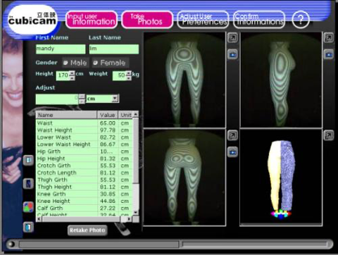

Digital Human Bodys
-

-

2019--2020, SMPR: Single-Stage Multi-Person Pose Regression. [Multi-Person Pose Estimation on COCO test-dev]
-
2017--2018, Shoeprint Extraction via GAN.
Shoeprints reflect some physiological characteristics of human beings, similar to fingerprints, which are important clues for criminal investigations. Extraction of shoeprints from images taken in crime scenes is a key preprocessing of the shoeprint image retrieval. It can be seen as a binary semantic image segmentation problem. Both traditional algorithms and existing deep learning approaches perform poorly for this problem, since shoeprint images contain various and strong background textures, are contaminated by serious noises and incomplete usually. This paper innovatively presents a framework with generative adversarial net (GAN) for the problem. Multiple generative networks, loses and adversarial networks are designed and compared within the framework. We also compared our method with the-state-of-the-art deep learning approaches on the professional shoeprint dataset with the evaluation criterion called MSS. The MSS of FCN, Deeplab-v3 and our method are 50.3%, 61.5%, and 75% on the dataset.
-
2006--2008, 乳腺X光成像中的变形模拟和分析.
在乳腺X光图像与MR等图像配准过程中，要解决由于挤压等因素造成的空间大变形问题。我们的有关变形的研究成果得到了该领域的同行认可，我们与美国Delaware State University和University of Pennsylvania合作，同时也承担了美国健康研究院(NIH)的INBRE项目Analysis of Breast Surface Deformation During Mammographic Compression。
-

2001--2003, 非接触人体测量系统.
基于数码相机测量人体等复杂几何形体重建是计算机视觉的重要研究内容之一，由于其具有信息不全、多角度信息融合、计算精度高，计算量大等问题，因此要获得快速、智能、自动、精度高的算法，对图像处理、几何重建及光滑曲面拟合等均提出较多的难题。 通过带有复杂约束的几何变形方法及复杂几何造型方面的研究成果，成功的解决了以上提出的问题。 并将其结果成功地应用到香港理工大学的非接触人体测量系统Cubicam中，使该产品的软件功能在国际上处于领先地位。
Others
-
2007--2008, 火烧驱物理模拟数据采集与图像处理系统. 中国石油辽河油田分公司